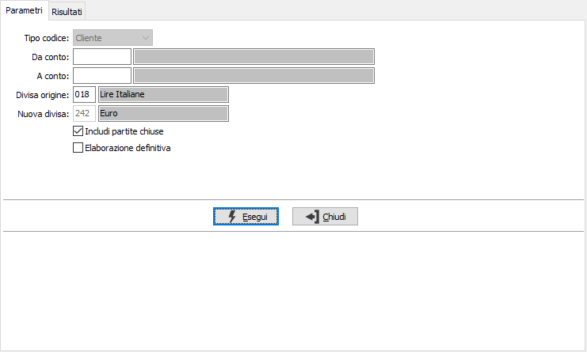
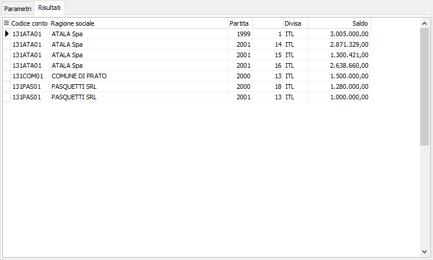

Conversione partite
La procedura permette di effettuare la conversione delle partite clienti da una qualsiasi divisa all'Euro.

TIPO CODICE: impostato predefinito su Cliente.
DA CODICE: indicare il codice del cliente da cui si intende iniziare l'elaborazione; confermando a vuoto l'elaborazione inizia dal primo codice valido. Sul campo sono attive le funzioni di ricerca (F9).
A CODICE: indicare il codice del cliente con cui si intende far terminare l'elaborazione; se si conferma a vuoto l'elaborazione termina con l'ultimo codice valido. Sul campo sono attive le funzioni di ricerca (F9).
DIVISA ORIGINE: indicare il codice della divisa per cui si vuole effettuare la conversione in Euro. Sul campo sono attive le funzioni di ricerca (F9).
NUOVA DIVISA: impostato predefinito su Euro. Indica la divisa in cui saranno convertite le partite.
ELABORAZIONE DEFINITIVA: se la casella contiene la spunta viene effettuata la conversione nella nuova divisa, altrimenti vengono solamente visualizzate le partite oggetto di conversione.
La pressione sul pulsante Esegui inizia l'elaborazione e visualizza le partite oggetto dell'operazione.
